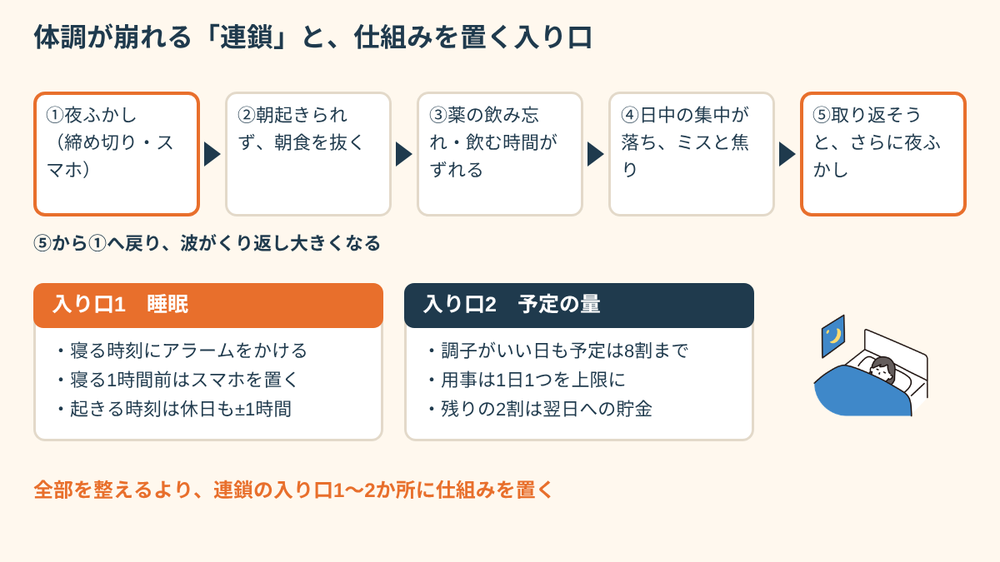
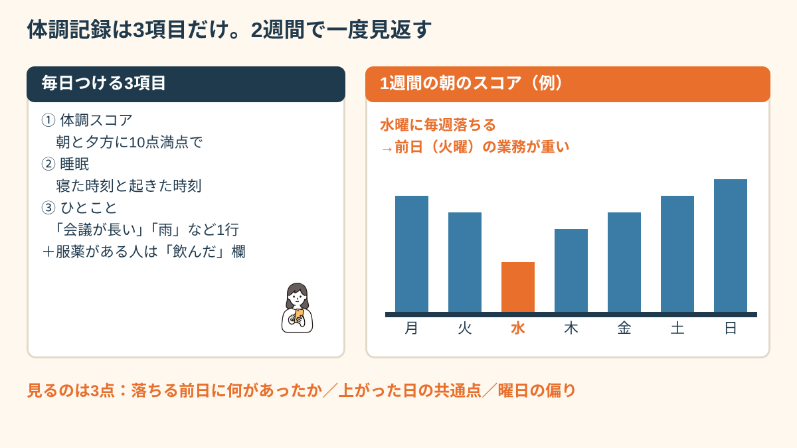
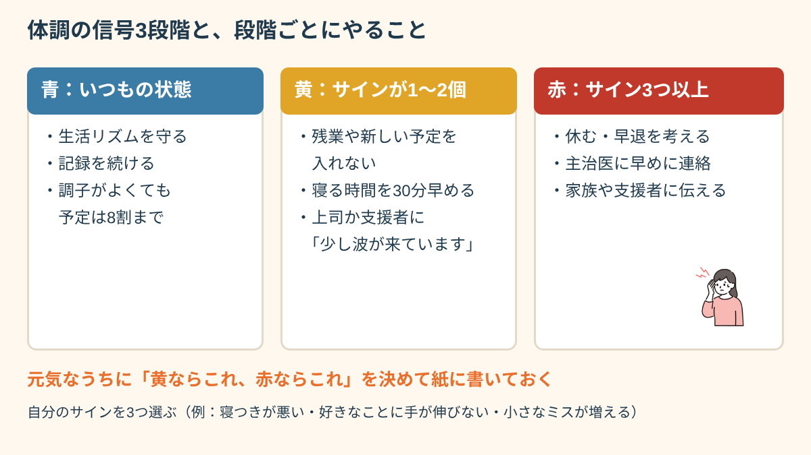
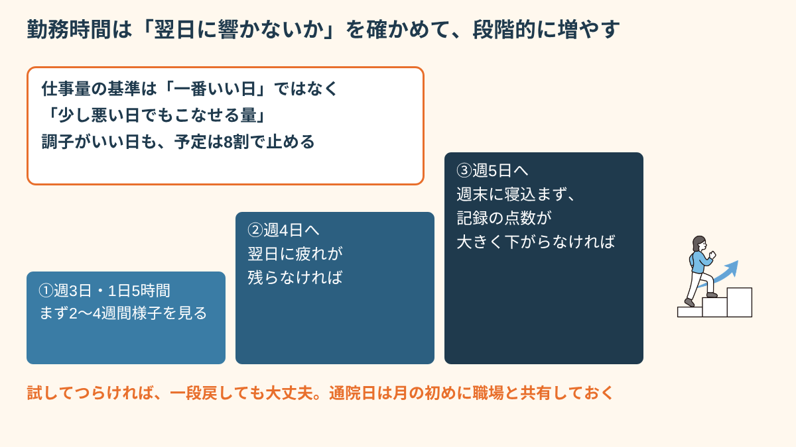
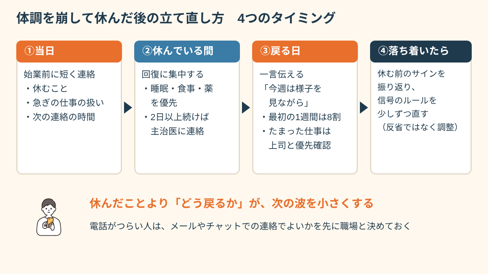

先にお伝えしたいのは、体調管理は意志の強さではなく、崩れる前に気づいて手を打つ「仕組み」の問題だということです。この記事では、体調の波が出る理由、続けやすい体調記録のつけ方、崩れる前のサインと3段階の対処、仕事量の合わせ方と職場への伝え方、休んでしまった後の立て直し方、使える相談先と制度まで、就労支援の現場で実際に使っている形でまとめます。
体調管理は根性ではなく「仕組み」の問題
「体調を崩さないよう気合いを入れる」という考え方は、障害のある方の体調管理ではほとんど長続きしません。うつ病や双極性障害、統合失調症などの精神疾患、発達障害による疲れやすさ、難病や慢性疾患、身体障害による痛みや疲労など、背景はさまざまですが、共通しているのは体調の波が「本人の努力とは別のところ」でも起きるという点です。
相談を受けていると、波を大きくするきっかけには傾向があります。睡眠のずれ（寝る時間が1〜2時間遅れる日が続く）、予定の詰め込み（調子のいい日に用事をまとめる）、服薬の乱れ（飲み忘れや自己判断での調整）、季節や気圧の変化（梅雨・台風・季節の変わり目）、そして人間関係や環境の変化（異動、担当替え、新しい人が入る）です。
そしてもう一つ大事なのが、体調は「連鎖」で崩れやすいということです。たとえば、仕事の締め切りで夜ふかしをする→朝起きられず朝食を抜く→薬を飲み忘れる→日中の集中力が落ちてミスが増える→焦ってさらに夜ふかしをする。ひとつがずれると、次々にずれていきます。
だからこそ、「全部を完璧に整える」のではなく、連鎖の入り口になりやすい1〜2か所に仕組みを置くほうが、少ない力で効果が出ます。多くの方にとって、その入り口は「睡眠」と「予定の量」です。寝る時間のアラーム、予定を入れすぎない上限ルールなど、意志に頼らない道具を先に置いておくイメージです。

「前は体調を崩すたびに『自分は社会人失格だ』と思っていました。支援員さんに、崩れる前に何が起きていたかを一緒に振り返ってもらったら、毎回『寝るのが遅くなった週』のあとだった。性格じゃなくて順番の問題なんだと分かって、少し楽になりました。」
体調記録で自分の波のパターンを知る
仕組みを置く場所を見つけるために役立つのが「体調記録」です。毎日の体調を短く書き残しておくと、「どんな日のあとに調子が落ちやすいか」「何をすると回復しやすいか」が見えてきます。記憶だけで振り返ると、つらかった日の印象に引っぱられて「ずっと調子が悪かった」と感じやすいので、記録があると冷静に見られます。
続けるコツは、項目を3つに絞ることです。おすすめは次の3つです。
- 体調スコア（10点満点）：朝と夕方の2回、直感で点数をつけるだけ。「何点が普通か」は人それぞれでかまいません。
- 睡眠時間：寝た時刻と起きた時刻。だいたいで大丈夫です。
- ひとこと：「会議が長かった」「雨」「人と話して楽しかった」など、その日の出来事を一行だけ。
道具は何でもかまいません。スマートフォンのメモ、カレンダーアプリ、手帳、紙のシートなど、毎日目に入る場所に置けるものが続きます。服薬がある方は、飲んだらチェックを入れる欄を足しておくと、飲み忘れと体調の関係も見えてきます。
記録は2週間分たまったら一度だけ見返すのがおすすめです。見るポイントは3つ。「点数が下がる前日や前々日に何があったか」「点数が上がった日に共通することは何か」「曜日や時間帯の偏りはあるか」です。毎日見返す必要はなく、むしろ毎日見ると点数に一喜一憂して疲れてしまいます。

見返しで「水曜に毎週落ちる」「雨の日は朝の点数が2点低い」などの傾向が分かったら、それは責める材料ではなく、仕事の組み方を変えるための材料です。たとえば「水曜は重い作業を入れない」「雨の予報の日は前日早めに寝る」といった具体的な一手に変えられます。
「体調記録をつけ始めたら、水曜日に毎週ガクッと落ちることが分かりました。火曜日の業務が重かったからです。それを支援員さんに話して業務の順番を調整してもらったら、水曜日が楽になりました。」
崩れる前のサインと、3段階の対処を決めておく
記録で自分のパターンが見えてきたら、次は「崩れる前のサイン」を言葉にしておきます。体調は急に崩れたように見えても、多くの場合、数日前から小さなサインが出ています。相談の場でよく聞くのは、次のようなものです。
- 寝つきが悪くなる、または夜中や早朝に目が覚める
- 好きなこと（音楽、ゲーム、料理など）に手が伸びなくなる
- メールの返信や部屋の片づけを後回しにしはじめる
- 小さなミスが増える、人の話が頭に入らない
- イライラしやすくなる、逆に気分が上がりすぎて予定を入れたくなる
- 頭痛・肩こり・胃の不調など、体の症状が増える
サインは人によって違うので、自分の記録や、家族・支援者から見た変化をもとに、自分のサインを3つだけ選んでおきます。そのうえで、体調を3つの段階に分けて、それぞれの段階で「やること」を先に決めておくのが効果的です。信号にたとえると分かりやすいでしょう。
- 青（いつもの状態）：生活リズムを守る。記録を続ける。調子がよくても予定は8割まで。
- 黄（サインが1〜2個出ている）：残業や新しい予定を入れない。寝る時間を30分早める。上司か支援者に「少し波が来ています」と一言伝える。
- 赤（サインが3つ以上、または生活が回らない）：休む・早退する選択肢を考える。主治医に早めに連絡し、受診を前倒しする。家族や支援者に状況を伝える。

ポイントは、しんどくなってから考えるのではなく、元気なうちに「黄になったらこれ、赤になったらこれ」と決めて紙に書いておくことです。調子が落ちているときは判断力も落ちるので、その場で考えると「まだ大丈夫」と無理を重ねてしまいがちです。紙に書いたルールは、未来の自分への手紙のようなものです。
このような「自分の取扱説明書」は、厚生労働省の「就労パスポート」や、医療機関・支援機関で使われるセルフケアプラン（クライシスプランと呼ばれることもあります）と考え方が近く、主治医や支援者と一緒に作ると、より自分に合ったものになります。職場と共有すれば、周りも「黄の段階で声をかける」といった関わり方ができるようになります。
よくある失敗は、調子がいい時期に「もう大丈夫」と感じてルールを手放してしまうことです。青の時期こそ、予定を8割に抑える、記録を続けるといった土台を守ることが、次の波を小さくします。
仕事量とペースを体調に合わせる工夫
体調の波がある方にとって、仕事量の目安は「一番調子がいい日」ではなく「少し調子が悪い日でもこなせる量」に合わせるのが基本です。調子のいい日を基準にすると、悪い日には必ず足りなくなり、取り返そうとして無理をする悪循環に入ってしまいます。
具体的には、次のような工夫がよく使われています。
- 8割ルール：調子がいい日でも、予定の8割で止める。残りの2割は翌日以降の「貯金」と考える。
- 週の中に軽い日をつくる：記録で落ちやすい曜日が分かったら、その日は会議や重い作業を入れない。
- 重い作業は午前か、自分の調子のいい時間帯に：午後に疲れが出る方は、判断が必要な作業を午前に寄せる。
- 休憩を予定に入れる：50分作業したら10分休む、昼休みは一人になれる場所で過ごすなど、休憩を「空いたら取る」ではなく先に決めておく。
- 通院日を固定する：月に1回の通院日をあらかじめ職場と共有し、その日は午前休や時間休を使えるようにしておく。
新しい職場に入るときや、休んだ後に戻るときは、段階的に時間を増やす考え方も役立ちます。たとえば「週3日・1日5時間」から始めて、2〜4週間ほど様子を見て「翌日に疲れが残らないか」「週末に寝込まないか」を確認してから、週4日、週5日へと広げていきます。増やす目安は、記録の点数が大きく下がらない状態が続いていることです。

障害者雇用では、短時間勤務から始められる求人や、勤務時間を相談できる職場もあります。今の働き方が合っているか迷うときは、慢性疲労症候群と働くことへの罪悪感についての記事も参考にしてみてください。
「前は体調がいいと残業も引き受けて、翌週に寝込むのを繰り返していました。今は調子がいい日も定時で帰ると決めています。最初は申し訳なかったけど、休む回数が減ったことで、結果的に職場の人にも喜ばれました。」
職場に体調のことをどう伝えるか
体調の波があることを職場に伝えるかどうかは、本人が決めてよいことです。ただ、伝えておくと「黄の段階で早めに相談できる」「急に休むときの連絡がしやすくなる」というメリットがあります。伝えるときは、病名や症状を詳しく話すよりも、「どんなときに崩れやすいか」「崩れそうなときにどうしてほしいか」「自分でやっていること」の3つをセットにすると、職場も協力しやすくなります。
たとえば、こんな伝え方です。「季節の変わり目や、予定が詰まった週のあとに体調を崩しやすいです。調子が落ちてきたら早めにお伝えするので、その週は新しい仕事を入れないでいただけると助かります。私も毎日体調を記録して、主治医と相談しながら調整しています。」
障害者手帳の有無にかかわらず、障害のある方は事業主に「合理的配慮」を求めることができます。体調管理に関係する配慮としては、通院のための時間休や休暇、時差出勤、休憩の取り方の工夫、業務量の調整、在宅勤務などがよく話し合われます。すべてが通るわけではありませんが、「何に困っていて、何があれば働けるか」を具体的に伝えると、話し合いが進みやすくなります。伝え方の詳しい型は、面接や職場で障害を伝えるときの記事でも紹介しています。
体調を崩して休んでしまった後の立て直し方
どれだけ仕組みを整えても、体調を崩して休む日はあります。大切なのは「休まないこと」ではなく、休んだ後にどう戻るかです。休んだこと自体より、「申し訳なさで連絡が遅れる」「戻った日に取り返そうとして無理をする」ことのほうが、次の不調につながりやすいからです。
当日：連絡は短く、早く
休む日の連絡は、始業前にできるだけ早く、短く伝えるのが基本です。理由を長く説明する必要はありません。「体調不良のため本日お休みをいただきます。急ぎの○○は△△さんに引き継ぎをお願いできますか。明日の朝、状況をご連絡します」のように、休むこと・急ぎの仕事の扱い・次の連絡のタイミングの3点があれば十分です。電話がつらい方は、事前にメールやチャットでの連絡でよいか職場と決めておくと、当日の負担が減ります。
休んでいる間：回復に集中する
休んでいる日に仕事のメールを何度も確認したり、「明日こそは」と自分を追い込んだりすると、回復が遅れがちです。休む日は休むことが仕事だと考えて、睡眠と食事、薬を優先します。2日以上続く場合や、いつもと違う症状がある場合は、主治医に早めに連絡しましょう。
戻る日：最初の1週間は「8割」に戻す
戻った日は、まず上司に「お休みをいただきありがとうございました。今日から戻ります。今週は様子を見ながら進めさせてください」と一言伝えます。そして最初の1週間は、残業をしない、新しい仕事は翌週以降にしてもらうなど、意識して8割に抑えます。たまった仕事は「急ぎ」「今週中」「来週でよい」に分けて上司と確認すると、一人で抱え込まずに済みます。
そのうえで、落ち着いたら記録を見返して「休む前にどんなサインが出ていたか」「黄の段階で何ができたか」を振り返ります。目的は反省ではなく、信号のルールを少しずつ自分に合わせて直していくことです。

「休んだ翌日は、職場の人の顔を見るのが本当に怖かったです。でも、支援員さんと決めておいた『ありがとうございました、今週は様子を見ながら』という一言を言ったら、上司が『無理しないでね』と返してくれて。決めておいた言葉があるだけで、足が前に出ました。」
長く休む場合や、休職から戻る場合の進め方は、休職明けの最初の1週間についての記事でくわしく整理しています。
一人で抱えないための相談先と制度（2026年11月時点）
体調管理は、一人で頑張るほど難しくなります。自分の記録を一緒に見てくれる人や、職場との間に入ってくれる人がいると、波を小さくしやすくなります。ここでは、体調と仕事の両立で使える主な相談先と制度を整理します。制度の内容や条件は自治体や個人の状況によって異なり、変わることもあるため、最新の情報は窓口で確認してください。
- 主治医：体調記録を見せながら、仕事の場面で困っていることを伝えましょう。「水曜に落ちる」「雨の日に頭痛が出る」など具体的に話すと、服薬や生活の調整に役立ちます。勤務時間の調整が必要なときは、意見書や診断書について相談できる場合もあります。
- 就労移行支援事業所：これから就職・転職を目指す方が、生活リズムづくりや体調管理、職場への伝え方を練習できる福祉サービスです。体調記録やセルフケアプランづくりをプログラムに取り入れている事業所も多くあります。
- 就労定着支援：障害福祉サービスを使って一般就労した方が、就職後に体調や職場の困りごとを相談できるサービスです。支援員が職場との間に入って調整することもあります。くわしくは就労定着支援の記事をご覧ください。
- 職場の産業医・保健師、人事担当：従業員が一定数以上の職場には産業医がいます。勤務時間や業務の調整について、医学的な立場から職場に意見を伝えてもらえる場合があります。
- 障害者就業・生活支援センター、ハローワーク：仕事と生活の両方を相談できる窓口です。ジョブコーチ（職場適応援助者）の支援につないでもらえることもあります。
- 自立支援医療（精神通院医療）：精神疾患で継続して通院する場合、医療費の自己負担が原則1割になる制度です（所得などにより月の上限額があります）。通院を続けやすくすることも、体調管理の土台になります。
家族や身近な人に体調のことを知ってもらうのも一つの方法です。黄や赤のサインを家族にも共有しておくと、自分では気づきにくい変化に早く気づいてもらえることがあります。
ストレスとの付き合い方については、ストレス管理の記事もあわせてどうぞ。